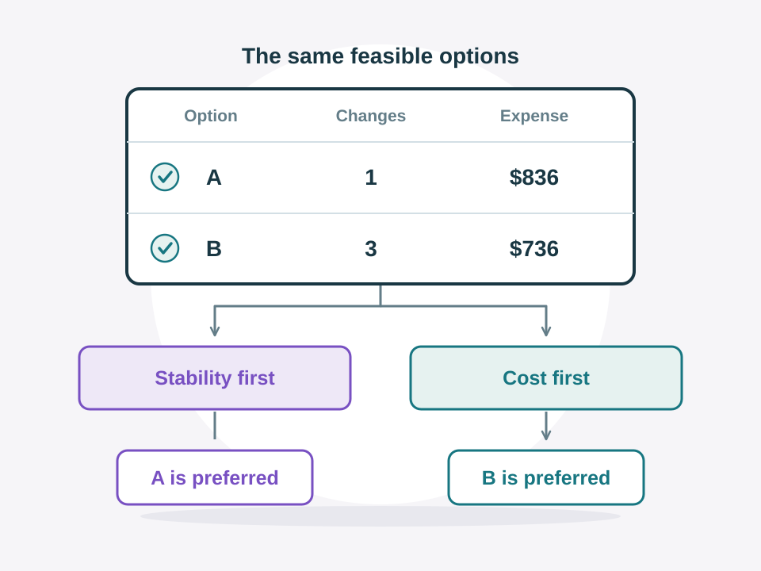
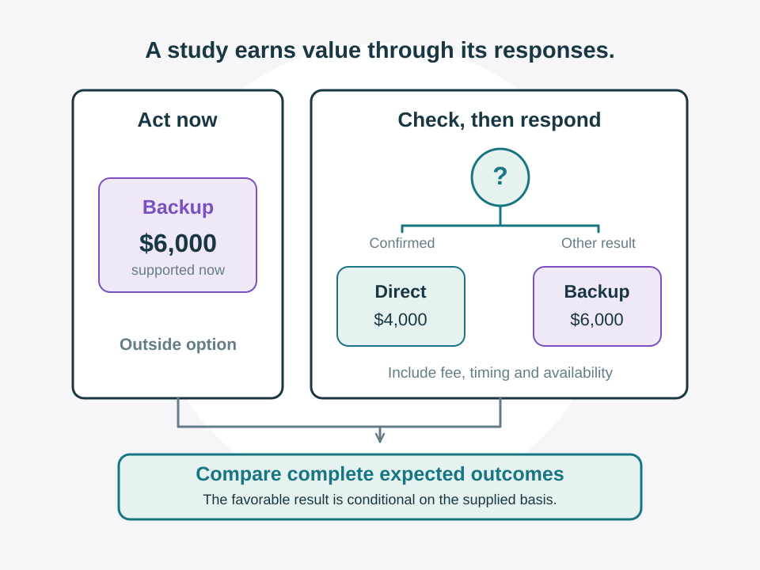
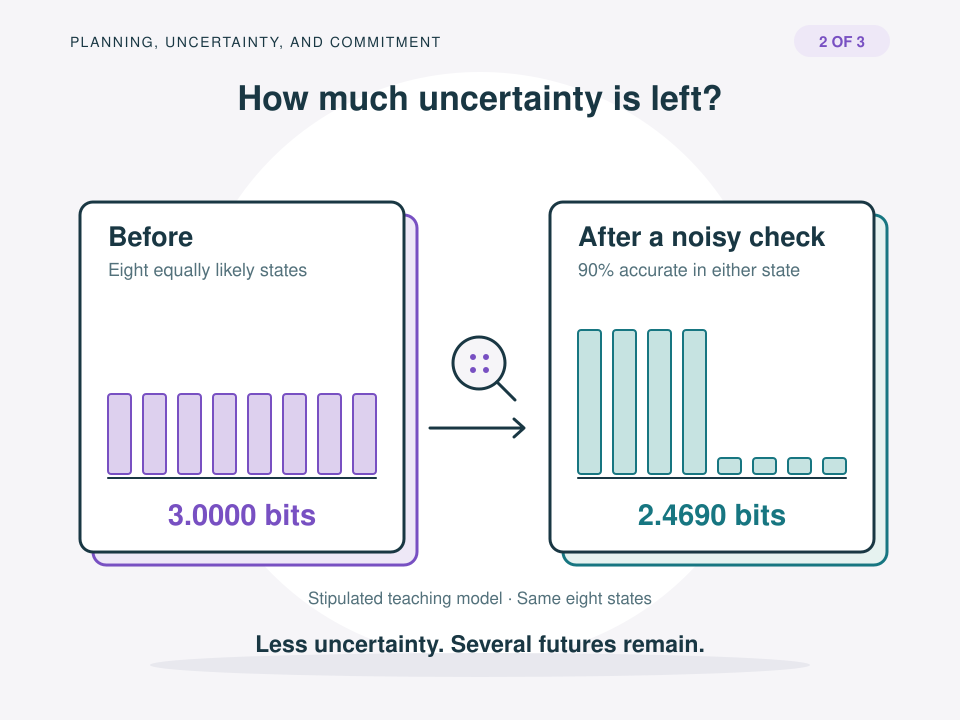
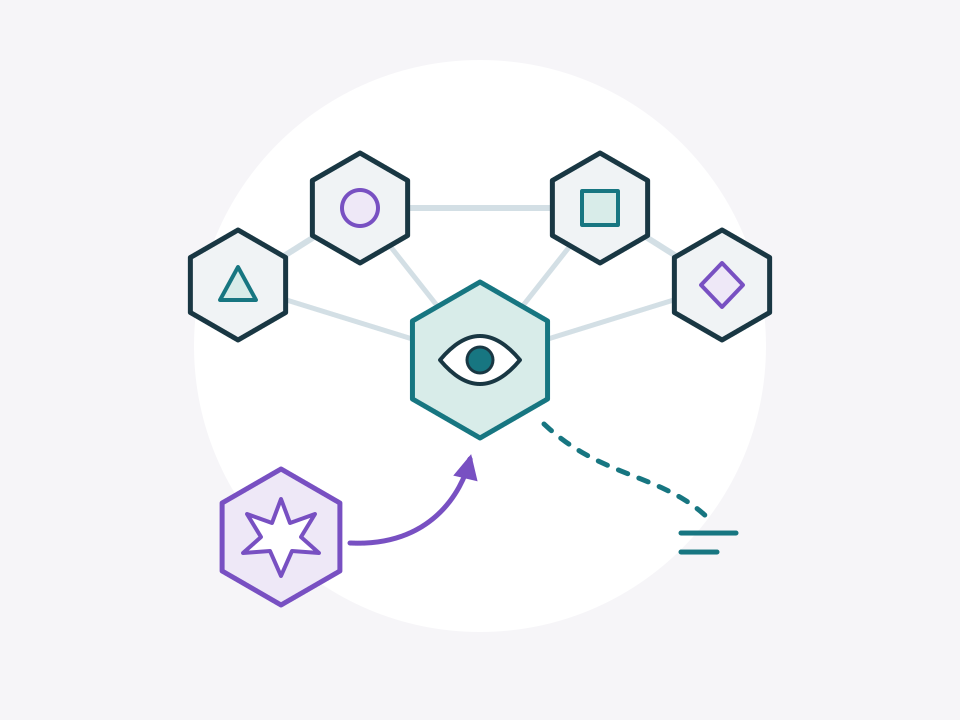

Which Feasible Option Should We Prefer?
Two plans can meet every requirement and still favor different interests. Learn what a report must establish before it can call one preferred.

Topic
More than one plan can work. Compare what each choice changes for the people and work involved.

Two plans can meet every requirement and still favor different interests. Learn what a report must establish before it can call one preferred.

Information earns its value through the decisions it can improve. Compare an investigation and its possible responses with the best supported action available now.

Check complete operating arrangements before choosing among them. Keep a workable option, an established preference and actual delivery separate.

Compare learning, control, and responses by what they enable.

Estimate the unknowns inside a stated decision model.

What a plan establishes, and what still needs a decision.

The Arrangement Problem 11 of 11
Ashe or Varus? Keep the other picks fixed. What changes about the team’s plan?

The Arrangement Problem 5 of 11
Two plans get every report reviewed by noon. One adds a $150 fee; the other moves a customer meeting. Which tradeoff would you accept?